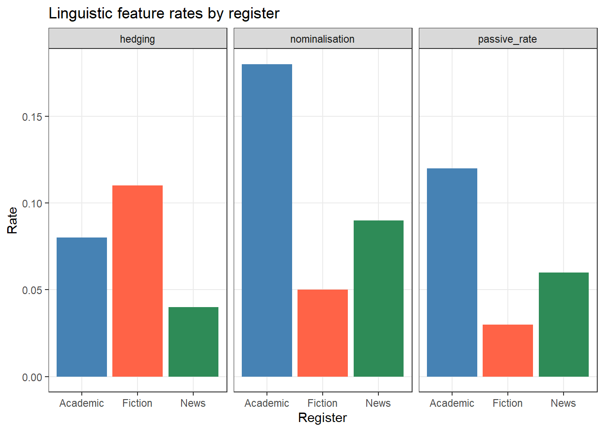

Code
install.packages("dplyr")
install.packages("tidyr")
install.packages("flextable")
install.packages("openxlsx")
install.packages("readxl")
install.packages("here")
install.packages("checkdown") 

This tutorial shows how to work with tables and how to process and manipulate tabular data in R. Tables are one of the most fundamental data structures in quantitative research: almost every dataset you will encounter — corpus metadata, survey responses, frequency counts, experimental results — arrives in tabular form. Knowing how to load, inspect, reshape, filter, summarise, join, and save tables efficiently is therefore one of the most important practical skills in R.
The tutorial uses the tidyverse family of packages throughout, particularly dplyr and tidyr. These packages provide a consistent, readable grammar for data manipulation that has become the standard in modern R programming. A highly recommended companion resource is Wickham and Grolemund (2016) (freely available at r4ds.had.co.nz), which covers these tools in much greater depth.
Before working through this tutorial, please complete or familiarise yourself with:
arrange()NAMartin Schweinberger. 2026. Handling Tables in R. The Language Technology and Data Analysis Laboratory (LADAL), The University of Queensland, Australia. url: https://ladal.edu.au/tutorials/table/table.html (Version 2026.03.28), doi: .
Install the required packages (once only):
install.packages("dplyr")
install.packages("tidyr")
install.packages("flextable")
install.packages("openxlsx")
install.packages("readxl")
install.packages("here")
install.packages("checkdown") Load the packages at the start of each session:
library(dplyr) # data manipulation
library(tidyr) # reshaping data
library(flextable) # formatted tables
library(here) # robust file paths
library(checkdown) # interactive exercises
options(stringsAsFactors = FALSE)
options(scipen = 100)
options(max.print = 100) We will use a simulated dataset throughout this tutorial. It represents a small corpus study: 120 observations of speech events from speakers across three registers, with metadata on speaker age, gender, proficiency, and word count.
set.seed(42)
corpus_meta <- data.frame(
doc_id = paste0("doc", sprintf("%03d", 1:120)),
speaker_id = paste0("spk", rep(1:40, each = 3)),
register = rep(c("Academic", "News", "Fiction"), times = 40),
gender = rep(c("Female", "Male", "Female", "Male",
"Female", "Male", "Female", "Male",
"Female", "Male"), each = 12),
age_group = rep(c("18-30", "31-50", "51+"), times = 40),
l1 = sample(c("English", "German", "Mandarin", "Arabic"),
120, replace = TRUE, prob = c(0.5, 0.2, 0.2, 0.1)),
word_count = c(
round(rnorm(40, mean = 320, sd = 55)), # Academic
round(rnorm(40, mean = 210, sd = 40)), # News
round(rnorm(40, mean = 275, sd = 65)) # Fiction
),
year = sample(2018:2023, 120, replace = TRUE),
stringsAsFactors = FALSE
)
# Introduce a few missing values for later sections
corpus_meta$word_count[c(5, 23, 67)] <- NA
corpus_meta$l1[c(12, 88)] <- NA We also create a second, smaller table that we will use for the joining section:
speaker_info <- data.frame(
speaker_id = paste0("spk", 1:40),
native_country = sample(
c("Australia", "UK", "Germany", "China", "Egypt"),
40, replace = TRUE, prob = c(0.35, 0.25, 0.2, 0.15, 0.05)
),
education = sample(c("Undergraduate", "Postgraduate", "PhD"),
40, replace = TRUE),
stringsAsFactors = FALSE
) What you’ll learn: The three main table types in R and when each is appropriate
Key concept: Data frames (and tibbles) are the standard for mixed-type tabular data
The three most common table types in R are:
Matrices store data of a single type only. If even one element is a character string, every other element is coerced to character as well. Matrices are used for numerical operations (e.g., in linear algebra or distance computations) but are rarely the right choice for storing research data with mixed variable types.
Data frames are the workhorse of R data analysis. Each column is a vector that can hold its own type (numeric, character, factor, logical), so different variable types coexist freely. Rows represent observations; columns represent variables.
Tibbles are the tidyverse version of data frames. They behave like data frames in almost all respects but have nicer default printing (they show only the first 10 rows and annotate column types), and they are slightly stricter about subsetting (less silent failure). All dplyr and tidyr operations work identically on data frames and tibbles.
# A matrix: all values become character because of the name column
m <- matrix(c("Alice", "Bob", 28, 34), nrow = 2,
dimnames = list(NULL, c("name", "age")))
class(m)[1] "matrix" "array" typeof(m[1, "age"]) # character, not numeric![1] "character"# A data frame: types are preserved per column
df <- data.frame(name = c("Alice", "Bob"), age = c(28, 34))
class(df)[1] "data.frame"class(df$age) # numeric, as intended[1] "numeric"# Convert a data frame to a tibble
tb <- tibble::as_tibble(df)
class(tb)[1] "tbl_df" "tbl" "data.frame"Use data frames or tibbles for almost all research data — they preserve variable types and work seamlessly with all tidyverse functions. Use matrices only when you need to pass data to a function that specifically requires a matrix (e.g., dist(), hclust(), or matrix algebra).
What you’ll learn: How to read tabular data from CSV, TXT, Excel, and RDS files
Key functions: read.csv(), read.delim(), readxl::read_excel(), readRDS()
Comma-separated values (CSV) files are the most portable format for tabular data. Use read.csv() for standard CSV files or read.delim() for tab-separated TXT files:
# Load a CSV file
mydata <- read.csv(here::here("data", "corpus_data.csv"))
# Load a tab-separated TXT file
mydata <- read.delim(here::here("data", "corpus_data.txt"),
sep = "\t", header = TRUE)
# Using read.table() — more flexible, more arguments to specify
mydata <- read.table(here::here("data", "corpus_data.txt"),
header = TRUE, sep = "\t", quote = "\"",
stringsAsFactors = FALSE) The tidyverse readr package provides faster alternatives with better default behaviour (no automatic factor conversion, cleaner column type detection):
library(readr)
mydata <- readr::read_csv(here::here("data", "corpus_data.csv"))
mydata <- readr::read_tsv(here::here("data", "corpus_data.txt")) Use readxl::read_excel() to load Excel workbooks. This package is part of the tidyverse and requires no installation if you have already installed tidyverse:
library(readxl)
# Load the first sheet
mydata <- readxl::read_excel(here::here("data", "corpus_data.xlsx"),
sheet = 1)
# Load by sheet name
mydata <- readxl::read_excel(here::here("data", "corpus_data.xlsx"),
sheet = "Sheet2")
# Load only specific rows and columns
mydata <- readxl::read_excel(here::here("data", "corpus_data.xlsx"),
range = "A1:F50") The openxlsx package is useful when you also need to write formatted Excel files (see the Saving Tables section):
library(openxlsx)
mydata <- openxlsx::read.xlsx(here::here("data", "corpus_data.xlsx"),
sheet = 1) R’s native binary format (.rds) preserves all R-specific attributes — factor levels, column types, and so on — exactly as they were when saved. It is the best format for saving and reloading data between R sessions:
# Load an RDS file
mydata <- readRDS(here::here("data", "corpus_data.rds")) here::here() for File Paths
Always use here::here() rather than hardcoded absolute paths ("C:/Users/Martin/...") or relative paths that depend on your working directory. here() constructs paths relative to the root of your R Project, so code works identically on any computer. See the Getting Started tutorial for how to set up an R Project.
What you’ll learn: How to quickly understand the shape, structure, and content of a table
Key functions: head(), tail(), str(), glimpse(), summary(), dim(), names()
Before doing anything with a dataset, always inspect it first. A handful of functions give you a rapid, comprehensive picture.
# First 6 rows (default)
head(corpus_meta) doc_id speaker_id register gender age_group l1 word_count year
1 doc001 spk1 Academic Female 18-30 Arabic 300 2018
2 doc002 spk1 News Female 31-50 Arabic 330 2020
3 doc003 spk1 Fiction Female 51+ English 352 2020
4 doc004 spk2 Academic Female 18-30 German 397 2021
5 doc005 spk2 News Female 31-50 Mandarin NA 2022
6 doc006 spk2 Fiction Female 51+ Mandarin 392 2021# First 10 rows
head(corpus_meta, 10) doc_id speaker_id register gender age_group l1 word_count year
1 doc001 spk1 Academic Female 18-30 Arabic 300 2018
2 doc002 spk1 News Female 31-50 Arabic 330 2020
3 doc003 spk1 Fiction Female 51+ English 352 2020
4 doc004 spk2 Academic Female 18-30 German 397 2021
5 doc005 spk2 News Female 31-50 Mandarin NA 2022
6 doc006 spk2 Fiction Female 51+ Mandarin 392 2021
7 doc007 spk3 Academic Female 18-30 German 338 2019
8 doc008 spk3 News Female 31-50 English 377 2023
9 doc009 spk3 Fiction Female 51+ Mandarin 371 2018
10 doc010 spk4 Academic Female 18-30 German 360 2023# Last 6 rows
tail(corpus_meta) doc_id speaker_id register gender age_group l1 word_count year
115 doc115 spk39 Academic Male 18-30 Mandarin 331 2021
116 doc116 spk39 News Male 31-50 Mandarin 265 2018
117 doc117 spk39 Fiction Male 51+ English 181 2023
118 doc118 spk40 Academic Male 18-30 English 317 2019
119 doc119 spk40 News Male 31-50 Mandarin 306 2020
120 doc120 spk40 Fiction Male 51+ German 275 2018# Dimensions (rows × columns)
dim(corpus_meta) [1] 120 8nrow(corpus_meta) [1] 120ncol(corpus_meta) [1] 8# Column names
names(corpus_meta) [1] "doc_id" "speaker_id" "register" "gender" "age_group"
[6] "l1" "word_count" "year" # Structure: column types and first values
str(corpus_meta) 'data.frame': 120 obs. of 8 variables:
$ doc_id : chr "doc001" "doc002" "doc003" "doc004" ...
$ speaker_id: chr "spk1" "spk1" "spk1" "spk2" ...
$ register : chr "Academic" "News" "Fiction" "Academic" ...
$ gender : chr "Female" "Female" "Female" "Female" ...
$ age_group : chr "18-30" "31-50" "51+" "18-30" ...
$ l1 : chr "Arabic" "Arabic" "English" "German" ...
$ word_count: num 300 330 352 397 NA 392 338 377 371 360 ...
$ year : int 2018 2020 2020 2021 2022 2021 2019 2023 2018 2023 ...# tidyverse-style structure overview (more readable)
dplyr::glimpse(corpus_meta) Rows: 120
Columns: 8
$ doc_id <chr> "doc001", "doc002", "doc003", "doc004", "doc005", "doc006",…
$ speaker_id <chr> "spk1", "spk1", "spk1", "spk2", "spk2", "spk2", "spk3", "sp…
$ register <chr> "Academic", "News", "Fiction", "Academic", "News", "Fiction…
$ gender <chr> "Female", "Female", "Female", "Female", "Female", "Female",…
$ age_group <chr> "18-30", "31-50", "51+", "18-30", "31-50", "51+", "18-30", …
$ l1 <chr> "Arabic", "Arabic", "English", "German", "Mandarin", "Manda…
$ word_count <dbl> 300, 330, 352, 397, NA, 392, 338, 377, 371, 360, 263, 315, …
$ year <int> 2018, 2020, 2020, 2021, 2022, 2021, 2019, 2023, 2018, 2023,…# Statistical summary per column
summary(corpus_meta) doc_id speaker_id register gender
Length:120 Length:120 Length:120 Length:120
Class :character Class :character Class :character Class :character
Mode :character Mode :character Mode :character Mode :character
age_group l1 word_count year
Length:120 Length:120 Min. :129.0 Min. :2018
Class :character Class :character 1st Qu.:210.0 1st Qu.:2019
Mode :character Mode :character Median :260.0 Median :2020
Mean :267.4 Mean :2020
3rd Qu.:324.0 3rd Qu.:2022
Max. :403.0 Max. :2023
NA's :3 The summary() output is especially useful: it shows the range, quartiles, and mean for numeric columns, and a frequency table for factor columns. Crucially, it also shows the count of NA values per column — a quick way to spot missing data.
Q1. You receive a new dataset and run dim(df) which returns c(2500, 18). What does this tell you?
Q2. Which function provides the most compact overview of column names AND their types AND the first few values in one call?
What you’ll learn: How to extract specific columns and rows from a data frame
Key functions: dplyr::select(), dplyr::filter()
Key concept: select() operates on columns; filter() operates on rows
select()select() keeps only the columns you name. It never changes the rows.
# Keep specific columns by name
corpus_meta |>
dplyr::select(doc_id, register, word_count) |>
head(5) doc_id register word_count
1 doc001 Academic 300
2 doc002 News 330
3 doc003 Fiction 352
4 doc004 Academic 397
5 doc005 News NA# Remove a column with -
corpus_meta |>
dplyr::select(-year, -l1) |>
head(5) doc_id speaker_id register gender age_group word_count
1 doc001 spk1 Academic Female 18-30 300
2 doc002 spk1 News Female 31-50 330
3 doc003 spk1 Fiction Female 51+ 352
4 doc004 spk2 Academic Female 18-30 397
5 doc005 spk2 News Female 31-50 NAselect() also accepts helper functions that select columns by pattern, type, or position:
# Columns whose names start with a given string
corpus_meta |>
dplyr::select(dplyr::starts_with("s")) |>
head(3) speaker_id
1 spk1
2 spk1
3 spk1# Columns whose names contain a given string
corpus_meta |>
dplyr::select(dplyr::contains("_id")) |>
head(3) doc_id speaker_id
1 doc001 spk1
2 doc002 spk1
3 doc003 spk1# Select and rename in one step
corpus_meta |>
dplyr::select(Document = doc_id, Register = register, Words = word_count) |>
head(3) Document Register Words
1 doc001 Academic 300
2 doc002 News 330
3 doc003 Fiction 352filter()filter() keeps only rows where the condition is TRUE. It never changes the columns.
# Keep only Academic texts
corpus_meta |>
dplyr::filter(register == "Academic") |>
nrow() [1] 40# Multiple conditions: Academic texts with more than 300 words
corpus_meta |>
dplyr::filter(register == "Academic", word_count > 300) |>
head(5) doc_id speaker_id register gender age_group l1 word_count year
1 doc004 spk2 Academic Female 18-30 German 397 2021
2 doc007 spk3 Academic Female 18-30 German 338 2019
3 doc010 spk4 Academic Female 18-30 German 360 2023
4 doc013 spk5 Academic Male 18-30 Arabic 354 2023
5 doc016 spk6 Academic Male 18-30 Arabic 352 2021# OR condition: Academic OR Fiction
corpus_meta |>
dplyr::filter(register %in% c("Academic", "Fiction")) |>
dplyr::count(register) register n
1 Academic 40
2 Fiction 40# Filter on a partial string match
corpus_meta |>
dplyr::filter(stringr::str_detect(doc_id, "00[12]$")) |>
head(5) doc_id speaker_id register gender age_group l1 word_count year
1 doc001 spk1 Academic Female 18-30 Arabic 300 2018
2 doc002 spk1 News Female 31-50 Arabic 330 2020select() and filter()
The two functions are almost always used together in a pipeline: first filter the rows you need, then select the columns you need:
corpus_meta |>
dplyr::filter(gender == "Female", age_group == "18-30") |>
dplyr::select(doc_id, register, word_count) |>
head(5) doc_id register word_count
1 doc001 Academic 300
2 doc004 Academic 397
3 doc007 Academic 338
4 doc010 Academic 360
5 doc025 Academic 254Q1. What is the key difference between select() and filter()?
Q2. You want to keep only rows where register is \"News\" AND word_count is greater than 200. Which code is correct?
What you’ll learn: How to create new columns and modify existing ones
Key functions: dplyr::mutate(), dplyr::if_else(), dplyr::case_when()
mutate() adds new columns or overwrites existing ones while keeping all rows and all other columns unchanged.
# Add a column for word count in thousands
corpus_meta <- corpus_meta |>
dplyr::mutate(word_count_k = round(word_count / 1000, 3))
head(corpus_meta[, c("doc_id", "word_count", "word_count_k")], 5) doc_id word_count word_count_k
1 doc001 300 0.300
2 doc002 330 0.330
3 doc003 352 0.352
4 doc004 397 0.397
5 doc005 NA NAif_else()Use dplyr::if_else() (the type-safe tidyverse version of base R ifelse()) to recode a column into two categories:
corpus_meta <- corpus_meta |>
dplyr::mutate(
length_class = dplyr::if_else(word_count >= 300, "Long", "Short")
)
table(corpus_meta$length_class, useNA = "ifany")
Long Short <NA>
41 76 3 case_when()case_when() is the tidyverse equivalent of a chain of if/else if statements. Conditions are evaluated top-to-bottom and the first match wins. The final TRUE ~ acts as the catch-all default:
corpus_meta <- corpus_meta |>
dplyr::mutate(
length_band = dplyr::case_when(
word_count < 200 ~ "Very short",
word_count >= 200 & word_count < 300 ~ "Short",
word_count >= 300 & word_count < 400 ~ "Long",
word_count >= 400 ~ "Very long",
TRUE ~ NA_character_ # catches NA word counts
)
)
table(corpus_meta$length_band, useNA = "ifany")
Long Short Very long Very short <NA>
40 54 1 22 3 Combine mutate() with stringr::str_detect() to recode based on partial string matches — a pattern that comes up constantly in corpus linguistics when working with file names or speaker IDs:
corpus_meta <- corpus_meta |>
dplyr::mutate(
period = dplyr::case_when(
year %in% 2018:2019 ~ "Early",
year %in% 2020:2021 ~ "Mid",
year %in% 2022:2023 ~ "Recent",
TRUE ~ "Unknown"
)
)
table(corpus_meta$period)
Early Mid Recent
41 41 38 Use the same column name on the left-hand side of mutate() to overwrite an existing column:
# Convert register to a factor with a custom level order
corpus_meta <- corpus_meta |>
dplyr::mutate(
register = factor(register,
levels = c("Academic", "News", "Fiction"))
)
levels(corpus_meta$register) [1] "Academic" "News" "Fiction" Q1. What happens if you use the same column name on both sides of mutate()?
Q2. In a case_when() call, what happens to rows that do not match any condition and there is no TRUE ~ catch-all?
What you’ll learn: How to rename columns and change their order
Key functions: dplyr::rename(), dplyr::relocate()
rename()rename() uses new_name = old_name syntax:
corpus_renamed <- corpus_meta |>
dplyr::rename(
Document = doc_id,
Speaker = speaker_id,
Register = register,
Gender = gender,
AgeGroup = age_group,
L1 = l1,
WordCount = word_count,
Year = year
)
names(corpus_renamed) [1] "Document" "Speaker" "Register" "Gender" "AgeGroup"
[6] "L1" "WordCount" "Year" "word_count_k" "length_class"
[11] "length_band" "period" rename_with()rename_with() applies a function to column names — useful for bulk transformations:
# Capitalise the first letter of every column name
corpus_meta |>
dplyr::rename_with(stringr::str_to_title) |>
names() [1] "Doc_id" "Speaker_id" "Register" "Gender" "Age_group"
[6] "L1" "Word_count" "Year" "Word_count_k" "Length_class"
[11] "Length_band" "Period" # Replace all underscores with dots
corpus_meta |>
dplyr::rename_with(~ gsub("_", ".", .x)) |>
names() [1] "doc.id" "speaker.id" "register" "gender" "age.group"
[6] "l1" "word.count" "year" "word.count.k" "length.class"
[11] "length.band" "period" relocate()relocate() moves columns to a new position without dropping any:
# Move word_count to the front
corpus_meta |>
dplyr::relocate(word_count, .before = doc_id) |>
head(3) word_count doc_id speaker_id register gender age_group l1 year
1 300 doc001 spk1 Academic Female 18-30 Arabic 2018
2 330 doc002 spk1 News Female 31-50 Arabic 2020
3 352 doc003 spk1 Fiction Female 51+ English 2020
word_count_k length_class length_band period
1 0.300 Long Long Early
2 0.330 Long Long Mid
3 0.352 Long Long Mid# Move year and l1 to after register
corpus_meta |>
dplyr::relocate(year, l1, .after = register) |>
head(3) doc_id speaker_id register year l1 gender age_group word_count
1 doc001 spk1 Academic 2018 Arabic Female 18-30 300
2 doc002 spk1 News 2020 Arabic Female 31-50 330
3 doc003 spk1 Fiction 2020 English Female 51+ 352
word_count_k length_class length_band period
1 0.300 Long Long Early
2 0.330 Long Long Mid
3 0.352 Long Long Midarrange()What you’ll learn: How to sort rows in ascending or descending order, including multi-column sorting
Key function: dplyr::arrange()
arrange() sorts rows by one or more columns. The default is ascending order; wrap a column in desc() for descending:
# Sort by word count, ascending (shortest first)
corpus_meta |>
dplyr::select(doc_id, register, word_count) |>
dplyr::arrange(word_count) |>
head(8) doc_id register word_count
1 doc068 News 129
2 doc055 Academic 144
3 doc061 Academic 150
4 doc062 News 151
5 doc059 News 156
6 doc069 Fiction 161
7 doc113 News 162
8 doc076 Academic 166# Sort by word count, descending (longest first)
corpus_meta |>
dplyr::select(doc_id, register, word_count) |>
dplyr::arrange(dplyr::desc(word_count)) |>
head(8) doc_id register word_count
1 doc021 Fiction 403
2 doc004 Academic 397
3 doc031 Academic 397
4 doc034 Academic 397
5 doc006 Fiction 392
6 doc114 Fiction 385
7 doc008 News 377
8 doc009 Fiction 371# Multi-column sort: register (alphabetical), then word_count (descending)
corpus_meta |>
dplyr::select(doc_id, register, word_count) |>
dplyr::arrange(register, dplyr::desc(word_count)) |>
head(10) doc_id register word_count
1 doc004 Academic 397
2 doc031 Academic 397
3 doc034 Academic 397
4 doc106 Academic 368
5 doc010 Academic 360
6 doc100 Academic 359
7 doc040 Academic 356
8 doc013 Academic 354
9 doc016 Academic 352
10 doc007 Academic 338NA Values in arrange()
Missing values are always sorted to the end by arrange(), regardless of ascending or descending order. Use dplyr::filter(!is.na(column)) before arrange() if you want to exclude them first.
What you’ll learn: How to compute group-level summaries — the most common operation in descriptive data analysis
Key functions: dplyr::group_by(), dplyr::summarise(), dplyr::count()
group_by() splits the data into groups; summarise() computes summary statistics within each group and collapses rows to one per group.
corpus_meta |>
dplyr::group_by(register) |>
dplyr::summarise(
n = dplyr::n(),
mean_wc = round(mean(word_count, na.rm = TRUE), 1),
sd_wc = round(sd(word_count, na.rm = TRUE), 1),
min_wc = min(word_count, na.rm = TRUE),
max_wc = max(word_count, na.rm = TRUE),
.groups = "drop"
) |>
flextable() |>
flextable::set_table_properties(width = .75, layout = "autofit") |>
flextable::theme_zebra() |>
flextable::fontsize(size = 12) |>
flextable::fontsize(size = 12, part = "header") |>
flextable::align_text_col(align = "center") |>
flextable::set_caption(caption = "Word count summary by register.") |>
flextable::border_outer() register | n | mean_wc | sd_wc | min_wc | max_wc |
|---|---|---|---|---|---|
Academic | 40 | 278.1 | 73.1 | 144 | 397 |
News | 40 | 252.8 | 64.7 | 129 | 377 |
Fiction | 40 | 271.0 | 69.0 | 161 | 403 |
corpus_meta |>
dplyr::group_by(register, gender) |>
dplyr::summarise(
n = dplyr::n(),
mean_wc = round(mean(word_count, na.rm = TRUE), 1),
.groups = "drop"
) |>
flextable() |>
flextable::set_table_properties(width = .6, layout = "autofit") |>
flextable::theme_zebra() |>
flextable::fontsize(size = 12) |>
flextable::fontsize(size = 12, part = "header") |>
flextable::align_text_col(align = "center") |>
flextable::set_caption(caption = "Word count by register and gender.") |>
flextable::border_outer() register | gender | n | mean_wc |
|---|---|---|---|
Academic | Female | 20 | 285.9 |
Academic | Male | 20 | 269.9 |
News | Female | 20 | 256.2 |
News | Male | 20 | 249.5 |
Fiction | Female | 20 | 283.3 |
Fiction | Male | 20 | 258.6 |
count() — Quick Frequency Tablescount() is a shortcut for group_by() + summarise(n = n()):
# Frequency of each register
corpus_meta |>
dplyr::count(register) register n
1 Academic 40
2 News 40
3 Fiction 40# Cross-tabulation: register × gender
corpus_meta |>
dplyr::count(register, gender) register gender n
1 Academic Female 20
2 Academic Male 20
3 News Female 20
4 News Male 20
5 Fiction Female 20
6 Fiction Male 20# Sort by frequency
corpus_meta |>
dplyr::count(l1, sort = TRUE) l1 n
1 English 51
2 Mandarin 27
3 German 22
4 Arabic 18
5 <NA> 2mutate() After group_by()When mutate() follows group_by(), it computes the new column within each group but retains all original rows — useful for computing group means alongside individual values:
corpus_meta |>
dplyr::group_by(register) |>
dplyr::mutate(
group_mean_wc = round(mean(word_count, na.rm = TRUE), 1),
deviation = word_count - group_mean_wc
) |>
dplyr::ungroup() |>
dplyr::select(doc_id, register, word_count, group_mean_wc, deviation) |>
head(8) # A tibble: 8 × 5
doc_id register word_count group_mean_wc deviation
<chr> <fct> <dbl> <dbl> <dbl>
1 doc001 Academic 300 278. 21.9
2 doc002 News 330 253. 77.2
3 doc003 Fiction 352 271 81
4 doc004 Academic 397 278. 119.
5 doc005 News NA 253. NA
6 doc006 Fiction 392 271 121
7 doc007 Academic 338 278. 59.9
8 doc008 News 377 253. 124. ungroup() After group_by()
After using group_by(), the data frame remains “grouped” until you explicitly ungroup() it. Grouped data frames can produce unexpected results in subsequent operations. Always add dplyr::ungroup() at the end of any pipeline that uses group_by(), or use the .groups = "drop" argument inside summarise().
Q1. What is the key difference between using mutate() and summarise() after group_by()?
Q2. What does .groups = \"drop\" do inside summarise()?
What you’ll learn: How to convert data between wide format and long format using pivot_longer() and pivot_wider()
Key concept: Long format has one row per observation; wide format has one row per subject with multiple measurement columns
Note on older functions: The tidyverse functions gather() and spread() are deprecated and replaced by pivot_longer() and pivot_wider(). This tutorial uses the modern versions.
Reshaping is one of the most frequently needed — and most frequently confusing — data operations. The key is understanding the two formats:
Wide format: Each subject occupies one row; repeated measurements are spread across multiple columns (e.g., score_time1, score_time2, score_time3). Easy for humans to read; needed for some statistical functions.
Long format: Each measurement is its own row; a column identifies which measurement it is. Required by ggplot2 and most tidy statistical functions.
Let us create a small wide-format summary to demonstrate:
# Create a wide-format summary: mean word count per register × gender
wide_summary <- corpus_meta |>
dplyr::group_by(register, gender) |>
dplyr::summarise(mean_wc = round(mean(word_count, na.rm = TRUE), 1),
.groups = "drop") |>
tidyr::pivot_wider(names_from = gender, values_from = mean_wc)
wide_summary |>
flextable() |>
flextable::set_table_properties(width = .5, layout = "autofit") |>
flextable::theme_zebra() |>
flextable::fontsize(size = 12) |>
flextable::fontsize(size = 12, part = "header") |>
flextable::align_text_col(align = "center") |>
flextable::set_caption(caption = "Mean word count per register × gender (wide format).") |>
flextable::border_outer() register | Female | Male |
|---|---|---|
Academic | 285.9 | 269.9 |
News | 256.2 | 249.5 |
Fiction | 283.3 | 258.6 |
pivot_longer()pivot_longer() gathers multiple columns into key-value pairs — it makes the data longer (more rows, fewer columns):
long_summary <- wide_summary |>
tidyr::pivot_longer(
cols = c(Female, Male), # columns to gather
names_to = "gender", # new column for the old column names
values_to = "mean_wc" # new column for the values
)
long_summary # A tibble: 6 × 3
register gender mean_wc
<fct> <chr> <dbl>
1 Academic Female 286.
2 Academic Male 270.
3 News Female 256.
4 News Male 250.
5 Fiction Female 283.
6 Fiction Male 259.pivot_wider()pivot_wider() spreads a key-value pair across multiple columns — it makes the data wider (fewer rows, more columns):
# Back to wide format
long_summary |>
tidyr::pivot_wider(
names_from = gender, # column whose values become new column names
values_from = mean_wc # column whose values fill the new columns
) # A tibble: 3 × 3
register Female Male
<fct> <dbl> <dbl>
1 Academic 286. 270.
2 News 256. 250.
3 Fiction 283. 259.A common situation in corpus work: you have measurements for several linguistic features across multiple text types, and you need to switch between formats depending on whether you are computing a table (wide) or a plot (long):
# Simulate feature counts per register
features_wide <- data.frame(
register = c("Academic", "News", "Fiction"),
passive_rate = c(0.12, 0.06, 0.03),
nominalisation = c(0.18, 0.09, 0.05),
hedging = c(0.08, 0.04, 0.11)
)
# Convert to long format for plotting
features_long <- features_wide |>
tidyr::pivot_longer(
cols = -register, # all columns except register
names_to = "feature",
values_to = "rate"
)
features_long # A tibble: 9 × 3
register feature rate
<chr> <chr> <dbl>
1 Academic passive_rate 0.12
2 Academic nominalisation 0.18
3 Academic hedging 0.08
4 News passive_rate 0.06
5 News nominalisation 0.09
6 News hedging 0.04
7 Fiction passive_rate 0.03
8 Fiction nominalisation 0.05
9 Fiction hedging 0.11# Plot in long format
ggplot2::ggplot(features_long,
ggplot2::aes(x = register, y = rate, fill = register)) +
ggplot2::geom_col() +
ggplot2::facet_wrap(~ feature) +
ggplot2::scale_fill_manual(values = c("steelblue", "tomato", "seagreen")) +
ggplot2::theme_bw() +
ggplot2::theme(legend.position = "none",
panel.grid.minor = ggplot2::element_blank()) +
ggplot2::labs(title = "Linguistic feature rates by register",
x = "Register", y = "Rate") 
Q1. Which format does ggplot2 require for plotting grouped data?
Q2. What is the modern tidyverse replacement for the deprecated gather() and spread() functions?
What you’ll learn: How to combine two data frames by matching on a shared key column
Key functions: dplyr::left_join(), dplyr::inner_join(), dplyr::full_join(), dplyr::anti_join()
Why it matters: Research data is often stored in multiple linked tables — joining is the core operation for combining them
All dplyr join functions take two data frames and a by argument specifying the shared key column(s). They differ in how they handle rows that have no match.
Function | Keeps | Unmatched rows | Note |
|---|---|---|---|
left_join(x, y) | All rows from x; matched rows from y | NA in y columns | ✓ Most common |
right_join(x, y) | All rows from y; matched rows from x | NA in x columns | |
inner_join(x, y) | Only rows with a match in both x and y | Dropped | |
full_join(x, y) | All rows from both x and y | NA where missing | |
anti_join(x, y) | Rows in x with NO match in y | No y columns added | Useful for diagnostics |
left_join() — The Standard Joinleft_join() keeps every row from the left table (x) and attaches matching columns from the right table (y). Rows in x with no match in y get NA in the y columns.
# Add speaker information to the corpus metadata
corpus_full <- corpus_meta |>
dplyr::left_join(speaker_info, by = "speaker_id")
# All original rows are preserved
nrow(corpus_full) == nrow(corpus_meta) [1] TRUE# New columns have been added
names(corpus_full) [1] "doc_id" "speaker_id" "register" "gender"
[5] "age_group" "l1" "word_count" "year"
[9] "word_count_k" "length_class" "length_band" "period"
[13] "native_country" "education" head(corpus_full[, c("doc_id", "speaker_id", "register",
"native_country", "education")], 8) doc_id speaker_id register native_country education
1 doc001 spk1 Academic UK Postgraduate
2 doc002 spk1 News UK Postgraduate
3 doc003 spk1 Fiction UK Postgraduate
4 doc004 spk2 Academic China Postgraduate
5 doc005 spk2 News China Postgraduate
6 doc006 spk2 Fiction China Postgraduate
7 doc007 spk3 Academic Australia PhD
8 doc008 spk3 News Australia PhDinner_join() — Matches Onlyinner_join() keeps only rows that have a match in both tables. Use it when you only want complete cases:
# Suppose we only have speaker info for speakers 1–25
partial_speaker_info <- speaker_info |>
dplyr::filter(speaker_id %in% paste0("spk", 1:25))
corpus_inner <- corpus_meta |>
dplyr::inner_join(partial_speaker_info, by = "speaker_id")
nrow(corpus_inner) # fewer rows than the original [1] 75anti_join() — Diagnosing Mismatchesanti_join() returns rows from x that have no match in y — useful for quality checking:
# Which documents have no speaker info?
corpus_meta |>
dplyr::anti_join(partial_speaker_info, by = "speaker_id") |>
dplyr::select(doc_id, speaker_id) |>
head(6) doc_id speaker_id
1 doc076 spk26
2 doc077 spk26
3 doc078 spk26
4 doc079 spk27
5 doc080 spk27
6 doc081 spk27When tables share more than one key column, pass a vector to by:
# Join on two columns simultaneously
df1 |>
dplyr::left_join(df2, by = c("speaker_id", "year")) If the key columns have different names in the two tables, use a named vector:
# "id" in df1 matches "speaker_id" in df2
df1 |>
dplyr::left_join(df2, by = c("id" = "speaker_id")) Q1. You have a data frame texts with 500 rows and a reference table metadata with 300 rows. You join them with left_join(texts, metadata, by = "doc_id"). How many rows will the result have?
Q2. When would you use anti_join() rather than left_join()?
What you’ll learn: How to detect, count, filter, and replace missing values in a data frame
Key functions: is.na(), na.omit(), tidyr::drop_na(), tidyr::replace_na(), dplyr::coalesce()
Missing values (NA) are unavoidable in real data. Handling them incorrectly is one of the most common sources of subtle errors in data analysis. The first step is always to understand where your NAs are and why they are there.
# Count NAs per column
colSums(is.na(corpus_meta)) doc_id speaker_id register gender age_group l1
0 0 0 0 0 2
word_count year word_count_k length_class length_band period
3 0 3 3 3 0 # Proportion of NAs per column
round(colMeans(is.na(corpus_meta)) * 100, 1) doc_id speaker_id register gender age_group l1
0.0 0.0 0.0 0.0 0.0 1.7
word_count year word_count_k length_class length_band period
2.5 0.0 2.5 2.5 2.5 0.0 # Which rows have at least one NA?
corpus_meta |>
dplyr::filter(dplyr::if_any(dplyr::everything(), is.na)) |>
dplyr::select(doc_id, word_count, l1) doc_id word_count l1
1 doc005 NA Mandarin
2 doc012 315 <NA>
3 doc023 NA Arabic
4 doc067 NA English
5 doc088 247 <NA># Remove any row with at least one NA (use with caution!)
corpus_complete <- corpus_meta |>
tidyr::drop_na()
nrow(corpus_meta) - nrow(corpus_complete) # rows removed [1] 5# Remove rows with NA in a specific column only
corpus_no_na_wc <- corpus_meta |>
tidyr::drop_na(word_count)
nrow(corpus_no_na_wc) [1] 117drop_na() discards entire observations. If missing data is not random (e.g., word count is missing for a specific text type or speaker group), dropping those rows introduces bias. Always investigate why values are missing before deciding how to handle them.
# Replace NA in a specific column with a fixed value
corpus_meta |>
tidyr::replace_na(list(l1 = "Unknown")) |>
dplyr::count(l1, sort = TRUE) l1 n
1 English 51
2 Mandarin 27
3 German 22
4 Arabic 18
5 Unknown 2# Replace NA with a computed value (e.g., column mean)
corpus_meta |>
dplyr::mutate(
word_count = dplyr::if_else(
is.na(word_count),
round(mean(word_count, na.rm = TRUE)),
word_count
)
) |>
dplyr::summarise(n_na = sum(is.na(word_count))) # should be 0 n_na
1 0na.rm in Summary FunctionsMost R summary functions (mean, sd, sum, min, max) have an na.rm argument. Setting na.rm = TRUE tells the function to ignore NA values rather than propagating them:
x <- c(10, 20, NA, 40, NA, 60)
mean(x) # NA — because NA contaminates the result [1] NAmean(x, na.rm = TRUE) # 32.5 — NAs excluded [1] 32.5What you’ll learn: How to write data frames to CSV, Excel, and RDS files
Key functions: write.csv(), openxlsx::write.xlsx(), saveRDS()
# Base R — the most portable format
write.csv(corpus_meta,
file = here::here("data", "corpus_meta_processed.csv"),
row.names = FALSE) # always set row.names = FALSE
# tidyverse readr version — slightly faster, no row names by default
readr::write_csv(corpus_meta,
file = here::here("data", "corpus_meta_processed.csv")) Use openxlsx to write formatted Excel files. It supports multiple sheets, cell styles, column widths, and more:
library(openxlsx)
# Single sheet
openxlsx::write.xlsx(corpus_meta,
file = here::here("data", "corpus_meta.xlsx"),
sheetName = "Corpus Metadata",
rowNames = FALSE)
# Multiple sheets in one workbook
wb <- openxlsx::createWorkbook()
openxlsx::addWorksheet(wb, "Metadata")
openxlsx::addWorksheet(wb, "Speaker Info")
openxlsx::writeData(wb, "Metadata", corpus_meta)
openxlsx::writeData(wb, "Speaker Info", speaker_info)
openxlsx::saveWorkbook(wb,
file = here::here("data", "corpus_study.xlsx"),
overwrite = TRUE) RDS is the best format for saving R objects between sessions. It preserves factor levels, column types, and all R-specific attributes:
saveRDS(corpus_meta, file = here::here("data", "corpus_meta.rds"))
# Reload later
corpus_meta <- readRDS(here::here("data", "corpus_meta.rds")) Format | Best for | Preserves | Write function |
|---|---|---|---|
CSV (.csv) | Sharing with other software and collaborators | Values only (no types, no factor levels) | write.csv() / readr::write_csv() |
Excel (.xlsx) | Sharing with non-R users; multi-sheet summaries | Values and basic formatting | openxlsx::write.xlsx() |
RDS (.rds) | Saving processed data between R sessions | All R types, factor levels, and attributes | saveRDS() |
Q1. You run mean(x) on a numeric vector and get NA. What is the most likely cause, and how do you fix it?
Q2. Why is RDS the best format for saving data between R sessions, compared to CSV?
Martin Schweinberger. 2026. Handling Tables in R. The Language Technology and Data Analysis Laboratory (LADAL), The University of Queensland, Australia. url: https://ladal.edu.au/tutorials/table/table.html (Version 2026.03.28), doi: .
@manual{martinschweinberger2026handling,
author = {Martin Schweinberger},
title = {Handling Tables in R},
year = {2026},
note = {https://ladal.edu.au/tutorials/table/table.html},
organization = {The Language Technology and Data Analysis Laboratory (LADAL), The University of Queensland, Australia},
edition = {2026.03.28}
doi = {}
}sessionInfo() R version 4.4.2 (2024-10-31 ucrt)
Platform: x86_64-w64-mingw32/x64
Running under: Windows 11 x64 (build 26200)
Matrix products: default
locale:
[1] LC_COLLATE=English_United States.utf8
[2] LC_CTYPE=English_United States.utf8
[3] LC_MONETARY=English_United States.utf8
[4] LC_NUMERIC=C
[5] LC_TIME=English_United States.utf8
time zone: Australia/Brisbane
tzcode source: internal
attached base packages:
[1] stats graphics grDevices datasets utils methods base
other attached packages:
[1] checkdown_0.0.13 here_1.0.1 openxlsx_4.2.8 flextable_0.9.7
[5] tidyr_1.3.2 dplyr_1.2.0
loaded via a namespace (and not attached):
[1] utf8_1.2.4 generics_0.1.3 fontLiberation_0.1.0
[4] renv_1.1.1 xml2_1.3.6 stringi_1.8.4
[7] digest_0.6.39 magrittr_2.0.3 RColorBrewer_1.1-3
[10] evaluate_1.0.3 grid_4.4.2 fastmap_1.2.0
[13] rprojroot_2.0.4 jsonlite_1.9.0 zip_2.3.2
[16] purrr_1.0.4 scales_1.4.0 fontBitstreamVera_0.1.1
[19] codetools_0.2-20 textshaping_1.0.0 cli_3.6.4
[22] rlang_1.1.7 fontquiver_0.2.1 litedown_0.9
[25] commonmark_2.0.0 withr_3.0.2 yaml_2.3.10
[28] gdtools_0.4.1 tools_4.4.2 officer_0.6.7
[31] uuid_1.2-1 ggplot2_4.0.2 vctrs_0.7.1
[34] R6_2.6.1 lifecycle_1.0.5 stringr_1.5.1
[37] htmlwidgets_1.6.4 ragg_1.3.3 pkgconfig_2.0.3
[40] gtable_0.3.6 pillar_1.10.1 data.table_1.17.0
[43] glue_1.8.0 Rcpp_1.0.14 systemfonts_1.2.1
[46] xfun_0.56 tibble_3.2.1 tidyselect_1.2.1
[49] rstudioapi_0.17.1 knitr_1.51 farver_2.1.2
[52] htmltools_0.5.9 labeling_0.4.3 rmarkdown_2.30
[55] compiler_4.4.2 S7_0.2.1 askpass_1.2.1
[58] markdown_2.0 openssl_2.3.2 This tutorial was re-developed with the assistance of Claude (claude.ai), a large language model created by Anthropic. Claude was used to help revise the tutorial text, structure the instructional content, generate the R code examples, and write the checkdown quiz questions and feedback strings. All content was reviewed, edited, and approved by the author (Martin Schweinberger), who takes full responsibility for the accuracy and pedagogical appropriateness of the material. The use of AI assistance is disclosed here in the interest of transparency and in accordance with emerging best practices for AI-assisted academic content creation.